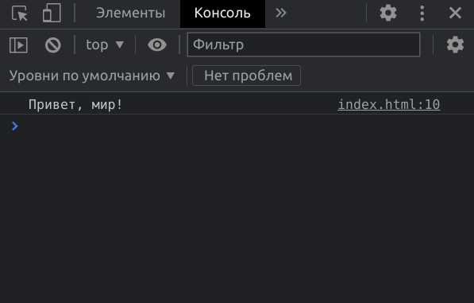
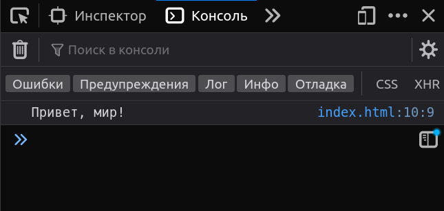

Посмотри в консоль, там что-то важное
Хотя наверное неважное, но всё равно смотри в консоль
Как открыть консоль.
✅ Вуаля
Chrome:
Firefox:
Остальные браузеры обычно основаны на том же Chromium (на котором основан Chrome) или Firefox, так что, думаю, их нет смысла показывать.
Ну а пользователи экзотических браузеров, тут уже надо смотреть по конкретному браузеру.